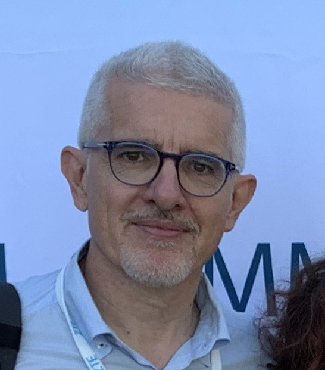

Pietro Manzoni
|  |
UNIVERSITAT POLITÈCNICA DE VALÈNCIADepartment of Computer Engineering (Dpt. de Informática de Sistemas y Computadores) School of Informatics (Escuela Técnica Superior de Ingeniería Informática) My page @ UPV, Google scholar, ResearchGate; Scopus Research Ids: Orcid; ResearchId |
Pietro Manzoni received the master degree in Computer Science from the "Università degli Studi" of Milan, Italy, in 1989, and the PhD degree in Computer Science from the "Politecnico di Milano", Italy, in 1995. Between November 1992 and February 1993 he did an internship at the Bellcore Labs, Red Bank, New Jersey, USA, and between February 1994 and November 1994 he was a visiting researcher at the ICSI (International Computer Science Institute) Berkeley, California, USA.
His research activity focuses on Mobile Wireless Systems, Internet of Things for Smart Cities and Rural Areas, LPWAN-based networks, and Pub/Sub systems.
He is currently a full professor of computer engineering at the "Universitat Politècnica de València", Spain. He is the coordinator of the Computer Networks Research Group (GRC) and a senior member of the IEEE.
Teaching
- Redes y Seguridad - (Networks and Security), Master in Informatics Engineering, EtsINF. (in spanish)
- Sistemas Basados en Redes Móviles - (Mobile Networks based Systems), Master in Computer Engineering, DISCA. (in spanish)
Publications:
Editorial Boards
Journal Editorial Board Member:
- "Digital Communications and Networks," KeAi Publishing. (Impact Factor: 5.382)
- "Vehicular Communications," Elsevier. (Impact Factor: 4.706)
- "Sensors, section: Sensor Networks," MDPI. (Impact Factor: 3.275)
- "Electronics," MDPI. (Impact Factor: 2.412)
- "Wireless Communications and Mobile Computing," Hindawi-Wiley. (Impact Factor: 1.819)
Journal Guest Editor (Special Issues):
- Sensors, MDPI AG. Special Issue on "AI for IoT". Manuscript Submission Deadline: 15 December 2020.
- Sensors, MDPI AG. Special Issue on "Cloud and Edge Computing for the Next Generation of Internet of Things Applications". Manuscript Submission Deadline: 30 June 2020.
- Sensors, MDPI AG. Special Issue on "Pub/Sub Solutions for IoT", closed (29 February 2020).
- Future Internet, MDPI AG. Special Issue on "IoT for Development (IoT4D)", closed (15 June 2019).
- Sensors, MDPI AG. Special Issue on "Pervasive Intelligence and Computing", closed (15 November 2018), associated to The 16th IEEE PiCom 2018.
- Sensors, MDPI AG. Special Issue on "Smart Vehicular Mobile Sensing", closed (15 March 2018).
- International Journal of Distributed Sensor Networks, SAGE. Special Collection on "Smart Objects for the Internet of Things", closed (March 2018).
- ACM/Springer Mobile Networks & Applications (MONE); Special Issue on "Experiences with the design and implementation of mobile smart objects", Volume 21, Issue 4, August 2016.
- ERCIM News 93. Special Issue on "Mobile Computing", Abril 2013.
- Journal of Communications and Networks, KICS; Special issue on Telematics communications and vehicular networking, April 2013.
Conferences Organization
2020
- Work in Progress and PhD Track Chairs, EAI GOODTECHS 2020, 6th EAI International Conference on Smart Objects and Technologies for Social Good, September 14-16, 2020, Antwerp, Belgium.
- General Chair, FRUGALTHINGS 2020 - 1th Workshop on Experiences with the Design and Implementation of Frugal Smart Objects, Co-located with ACM MobiCom 2020, 21-25 Sep, London, United Kingdom.
- Track Chair, PICom 2020, 18th IEEE International Conference on Pervasive Intelligence and Computing (PICom 2020) June 22-26 2020, Calgary, Canada.
- Keynote chair, CCNC 2020, The 17th Annual IEEE Consumer Communications & Networking Conference, 10-13 January 2020, Las Vegas, USA.
- Steering Committee Member, CCNC 2020, The 17th Annual IEEE Consumer Communications & Networking Conference, 10-13 January 2020, Las Vegas, USA.
2019
- Co-chair for IEEE Globecom 2019 SAC symposium track “Internet of Things”, IEEE Global Communications Conference 9-13 December 2019, Waikoloa, HI, USA
- General co-chair of GOODTECHS 2019. ACM/EAI International Conference on Smart Objects and Technologies for Social Good, September 25-27, 2019 - Valencia, Spain.
- Track Chair (Track 3: Pervasive and Embedded Computing) of PICom 2019, 17th IEEE International Conference on Pervasive Intelligence and Computing (PICom 2019)August 5-8 2019, Fukuoka, Japan.
- Steering Committee Member of PERSIST-IoT, Workshop on "Pervasive Systems in the IoT era". Catania (Italy). In conjunction with ACM MobiHoc 2019 July 2nd, 2019.
- Workshops Co-chair for The 28th International Conference on Computer Communications and Networks (ICCCN 2019) July 30-August 2, 2019, Valencia, SPAIN.
- General chair of HotSALSA 2019 Workshop on Hot Topics in Social and Mobile Connected Smart Objects. Co-located with IEEE INFOCOM 2019. 29 April, 2019 / Paris, France
- General chair of CCNC 2019, The 16th Annual IEEE Consumer Communications & Networking Conference, 11-14 January 2019, Las Vegas, USA.
- Steering Committee Member of CCNC 2019, The 16th Annual IEEE Consumer Communications & Networking Conference, 11-14 January 2019, Las Vegas, USA.
2018
- General chair of SS on Mobile Social Networks at IEEE PIMRC 2018. IEEE International Symposium on Personal, Indoor and Mobile Radio Communications 9-12 September 2018 – Bologna, Italy
- Co-Program Chair of PICom 2018, The 16th IEEE International Conference on Pervasive Intelligence and Computing, 12-15 August 2018, Athens, Greece.
- General chair of SMARTOBJECTS 2018. The 4th Workshop on experiences with the design and implementation of smart objects, June 26-29, 2018, Los Angeles, USA. Part of ACM MobiHoc 2018, The 19th International Symposium on Mobile Ad Hoc Networking and Computing.
- Work-in-Progress - Mini Conference Co-Chair at CCNC 2018. The 15th Annual IEEE Consumer Communications & Networking Conference, 12-15 January 2018, Las Vegas, USA.
- Steering Committee Member of CCNC 2018. The 15th Annual IEEE Consumer Communications & Networking Conference, 12-15 January 2018, Las Vegas, USA.
2017
- Steering Committee Member of GOODTECHS 2017. EAI International Conference on Smart Objects and Technologies for Social Good, November 2930, 2017, Pisa, Italy (http://goodtechs.eu/2017/show/steering-com).
- General co-chair of SMARTOBJECTS 2017, 3rd Workshop on experiences with the design and implementation of smart objects, October, 2017, Snowbird, USA. Part of ACM MobiCom 2017 - The 23rd Annual International Conference on Mobile Computing and Networking, (http://www.grc.upv.es/smartobjects2017/).
2016
- TPC chair of CCNC 2017. The 14th Annual IEEE Consumer Communications & Networking Conference, 8-12 January 2016, Las Vegas, USA (http://ccnc2017.ieee-ccnc.org/).
- General co-chair of GOODTECHS 2016. EAI International Conference on Smart Objects and Technologies for Social Good, November 30December 1, 2016, Venice, Italy (http://goodtechs.eu/2016/show/home).
- General co-chair of SMARTOBJECTS 2016, 2nd Workshop on experiences with the design and implementation of smart objects, 7th of October, 2016, New York, USA. Part of ACM MobiCom 2016 - The 22nd Annual International Conference on Mobile Computing and Networking, (http://www.grc.upv.es/smartobjects2016/). General co-chair.
- TPC vice-chair of CCNC 2016. The 13th Annual IEEE Consumer Communications & Networking Conference, 9-12 January 2016, Las Vegas, USA (http://ccnc2016.ieee-ccnc.org/).
2015
- General co-chair of SMARTOBJECTS 2015, Workshop on experiences with the design and implementation of smart objects, 7th of September, 2015, Paris, FRANCE. Part of ACM MobiCom 2015 - The 21st Annual International Conference on Mobile Computing and Networking, (http://www.grc.upv.es/smartobjects2015/).
- General co-chair of GOODTECHS 2015. EAI International Conference on Smart Objects and Technologies for Social Good, October 26, 2015, Rome, Italy (http://goodtechs.eu/2015/show/home).
- TPC Chair of the 13th International Conference on Ad-Hoc Networks and Wireless, June 2014, Benidorm, Spain.
previous
- Keynote Speakers Chair of the IEEE/IFIP Wireless Days 2013 14-17 November 2013, Valencia
- TPC Co-chair of the Fifth International Conference on Ubiquitous and Future Networks (ICUFN 2013) 2-5 July 2013, Da Nang, Vietnam
- General Co-Chair of the IFIP Networking 2011, 9-13 May 2011, Valencia
- Program Committee Co-Chairs of The Fourth International Workshop on Ad Hoc, Sensor and P2P Networks (AHSP2011) Tokyo Japan, March 25, 2011
- Patronage Chair of the CEDI 2010 - III Congreso Español de Informática, 7-10 September 2010, Valencia.
- General Vice Chair of the 3rd IEEE Vehicular Networks & Applications Workshop, co-located with IEEE * International Conference on Communications (ICC 2010). 23-27 May 2010, Cape Town, South Africa.
- TPC Chair of the 2nd IEEE Intelligent Vehicular Communications System Workshop (IVCS'10), co-located with IEEE Consumer Communications & Networking Conference (CCNC 10). 9-12 January 2010, Las Vegas, EEUU.
- TCP Vice Chair of the 2nd IEEE Vehicular Networks & Applications Workshop, co-located with IEEE International Conference on Communications (ICC 2009). 14-18 June 2009, Dresden, Germany.